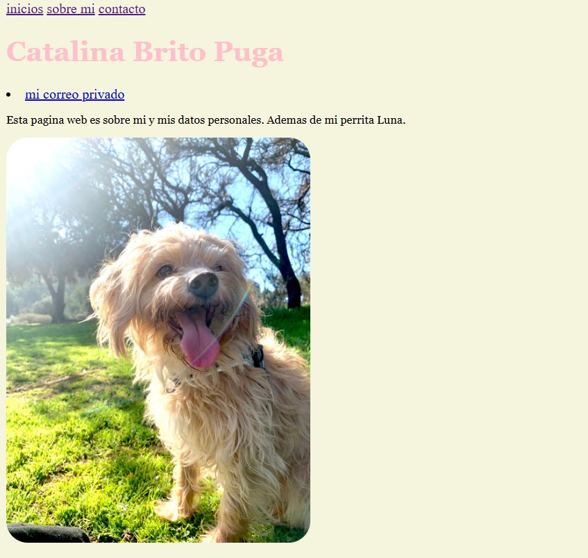
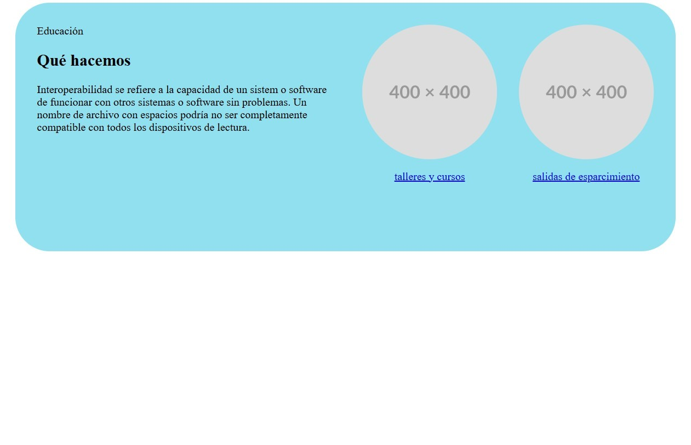
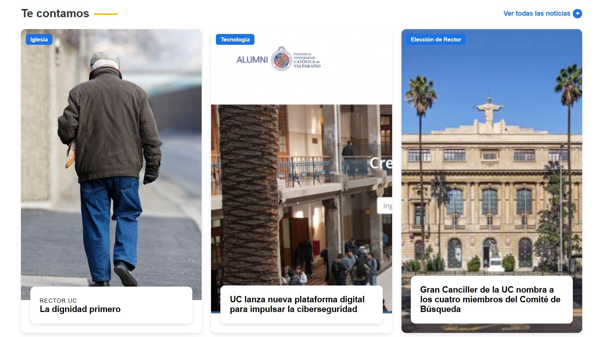
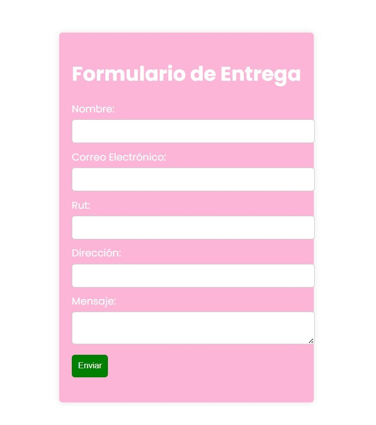

Ejercicios
En esta sección se pueden observar los ejercicios realizados en clases los cuales fueron un total de 4.

Pagina web: sobre mi
Ejercicio 1

Diseño en figma
Ejercicio 2

Recreación web PUCV
Ejercicio 3

Formulario
Ejercicio 4